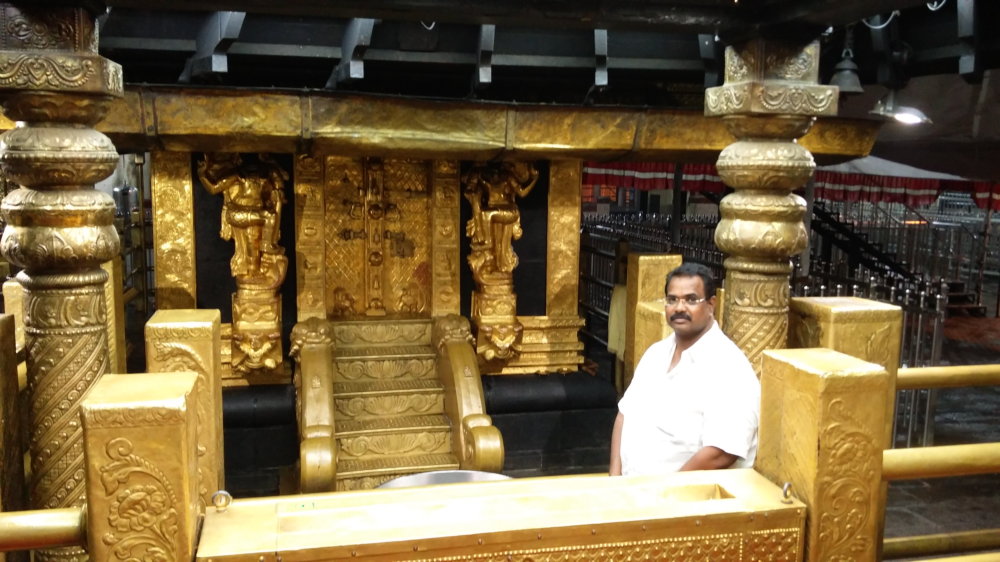

The Scream by Edvard Munch. Painted in 1893.
This text will be written from right to left Jump to Chapter 4Presenter: It is the decision-making counterpart of the View and is a pure java class, with no access to Android APIs. It receives the user interactions passed on from its View and then takes the decision based on the business logic, finally instructing the View to perform specific actions. It also communicates with the DataManager for any data it needs to perform business logic. Presenter: It is the decision-making counterpart of the View and is a pure java class, with no access to Android APIs. It receives the user interactions passed on from its View and then takes the decision based on the business logic, finally instructing the View to perform specific actions. It also communicates with the DataManager for any data it needs to perform business logic. Presenter: It is the decision-making counterpart of the View and is a pure java class, with no access to Android APIs. It receives the user interactions passed on from its View and then takes the decision based on the business logic, finally instructing the View to perform specific actions. It also communicates with the DataManager for any data it needs to perform business logic.
I was recently html and css. During this time I went through a lot of and books. And the best tutorial I find for learning .This is a link
Bonnie lies over the ocean.
My Bonnie lies over the ocean.
My Bonnie lies over the sea.
My Bonnie lies over the ocean.
Oh, bring back my Bonnie to me.
WWF's goal is to: Build a future where people live in harmony with nature.
The WHO was founded in 1948.
Marking up abbreviations can give useful information to browsers, translation systems and search-engines.
